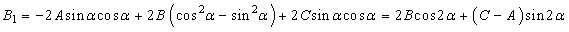

4. Приведение общего уравнения кривой второго порядка к
каноническому виду
Пусть кривая второго порядка задана в общем виде:
Общий вид
уравнений кривых второго порядка
.
Приведение этого уравнения к каноническому виду заключается
в нахождении системы координат, в которой кривая имеет канонический вид,
геометрически это может быть достигнуто переносом начала координат в центр
кривой и поворотом координатных осей на
угол, совмещающий оси симметрии кривой с координатными осями. Алгебраически это
приводит к исчезновению членов с произведением текущих координат и членов,
содержащих их в первой степени, после применения формул (1) и (3).
Преобразуем уравнение (6) поворотом осей координат на угол
 так, чтобы исчезло
слагаемое, содержащее произведение неизвестных. Преобразование поворота
так, чтобы исчезло
слагаемое, содержащее произведение неизвестных. Преобразование поворота
так, чтобы исчезло
слагаемое, содержащее произведение неизвестных. Преобразование поворотагде - новые
координаты.
Уравнение примет вид:
,
где
.
Найдём угол поворота из условия :
.
Если А = С, то и
в качестве угла поворота можно выбрать ;
если , то выбираем  .
Опуская штрихи и индексы, после поворота получаем уравнение вида:
.
Опуская штрихи и индексы, после поворота получаем уравнение вида:
.
Опуская штрихи и индексы, после поворота получаем уравнение вида: . (7)
Если и одновременно не равны нулю,
уравнение определяет одну из кривых второго порядка: при – эллипс (при - окружность), при – гиперболу, при – параболу. Возможны случаи
вырождения: эллипс вырождается в точку или мнимый эллипс, гипербола – в пару
пересекающихся прямых, парабола – в пару параллельных прямых.